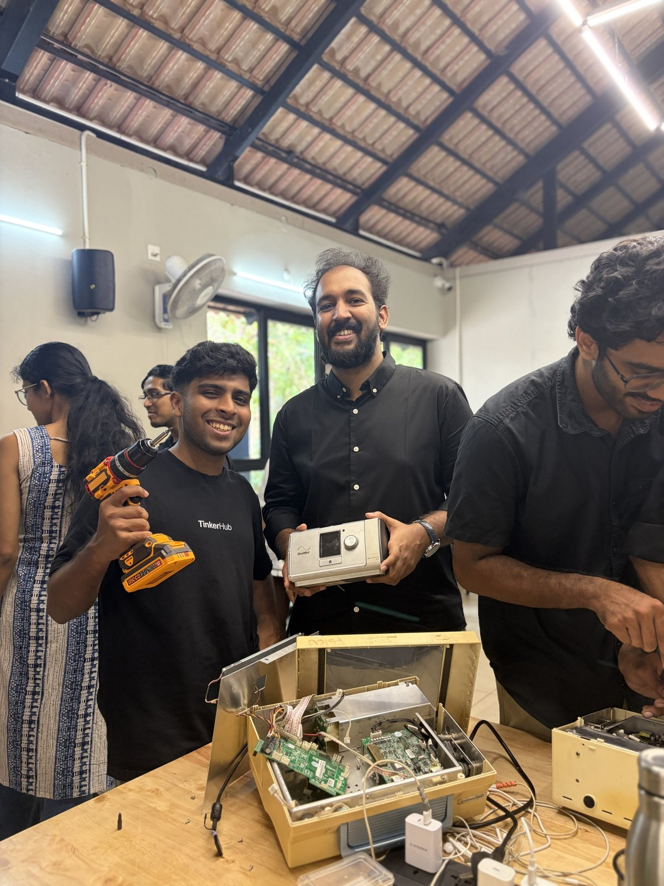
A proposal from Medinn
A medical incubator for Kozhikode.
Turning problems from the ward into products, built by clinicians, engineers and makers together, tested where care happens, and launched from Malabar.
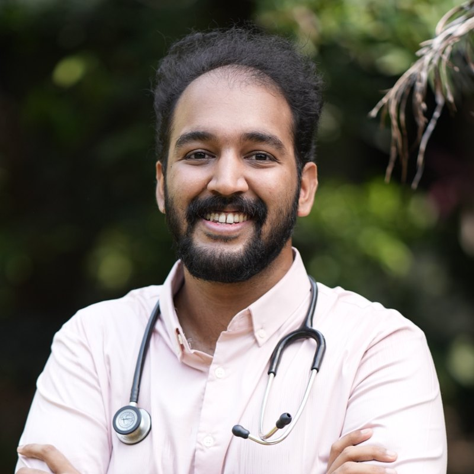
Dr. Sidharth NarayananMedinn, Kozhikode · October 2026
Why now
Malabar has the clinicians and the engineers. It is missing the bench between them.
Kozhikode trains doctors at scale and sits next to NIT Calicut and a growing maker community. Yet clinical problems rarely reach the people who can build solutions, and devices that fail in our wards are rarely studied, repaired or improved locally.
Clinicians
See the problems every day, but have no structured route to turn them into projects.
The missing bench
A shared place, process and mentorship where clinical problems become built, tested solutions.
Engineers and makers
Can build, but rarely get clinical context, real devices or access to a ward to test in.
Evidence from the Repair Café, 18 October 2026
- No paper trail
- Many devices had no record of maintenance contracts, servicing or routine care.
- Donated, then lost
- Donated devices often never get registered with the biomedical team, so they fall outside maintenance and warranty.
- Care nobody taught
- Basic care like filter changes is not something most healthcare workers are trained in.
- Calibration
- It is costly. How much of it actually happens?
“We look after our phones and computers better than the devices patients depend on.”From the Repair Café reportRead the full report
What has happened so far
Two years of building the pieces, one after another.
Each step below is done and public. Together they are the groundwork for an incubator: a community, partners, events that ran, and a first hands-on proof on real hospital devices.
2021–23
Oct-Nov 2021
Medicine Magnum
An all-India medicine quiz for undergraduates and interns, organized with Doc Tutorials and the College Union at Calicut Medical College.
2022 onwards
Cytokine Lectures, Head of Operations, later COO
A clinician-led edtech grown across 50+ medical college communities, with close to ₹50L in lifetime revenue that Medinn helped build.
2024
2024
Medinn begins
Started as Medinn Networking, connecting healthcare innovators, students and doctors.
19 Oct 2024
Panelist, IEDC Summit at NIT Calicut
HealthTech track with Dr. Moopen's iNEST: why healthcare needs engineers.
Oct-Dec 2024
Doctors AI
Organizing committee for the global summit, an AI in Healthcare workshop, and a speaker at the Virtual Global Summit.
2025
April 2025
Oncoscope 2025, Organizing Head
An all-India undergraduate oncology conference at Government Medical College, Calicut.
2025
AI in Healthcare Conclave at Hospex, Kochi
Startup outreach, organized and marketed the conclave, and co-presented CureKart.
2025
Surgical Hackathon, TinkerHub Cochin
Co-organizer: clinicians, designers and engineers around surgical problems.
Oct 2025
Bio-entrepreneurship Advanced Certification
Residential course with IIT Palakkad Technology I-Hub Foundation and the Kerala Biotechnology Commission.
2026
16 May 2026
IEDC launched at Government Medical College, Kozhikode
An innovation and entrepreneurship cell at the medical college, pushed for as Student Lead, now building a workflow with NIT Calicut, the Kerala Startup Mission, TinkerHub and TinkerSpace.
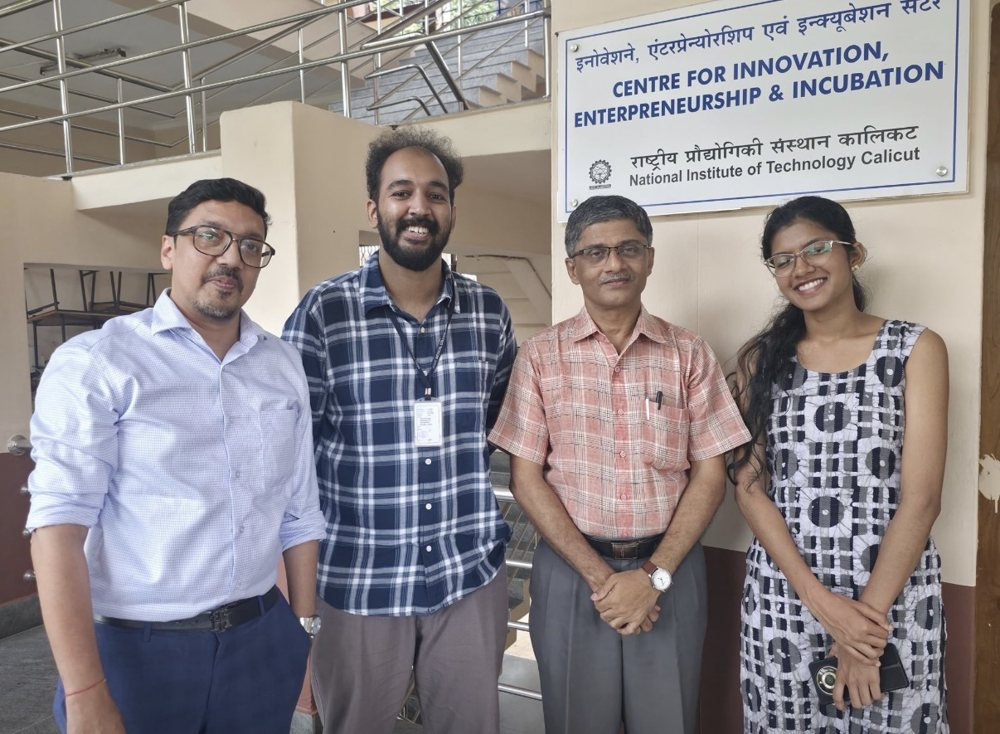
5-6 Sept 2026
Medical & Surgical Intervention Hackathon
Overnight at TinkerSpace Calicut with IEDC CMC: 40+ participants building for medical and surgical challenges. The first medical hackathon at the college.
20-21 Sept 2026
The Handover, with Baby Memorial Hospital
A two-day internship bootcamp for new doctors across Kerala, conceptualized, run, marketed and executed by Medinn for Cytokine Lectures, in partnership with the Baby Memorial Hospital group. 100+ attendees from 15+ colleges across Medicine, Emergency Medicine, Surgery and Orthopaedics.
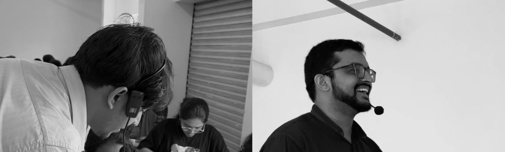
4 Oct 2026
Claude Hackathon, second prize
Team Cosense, 48 hours at TinkerSpace Calicut: a wearable safety band concept for patients prone to wandering.
18 Oct 2026
India's first medical Repair Café
Medical students, engineers, TinkerHub makers and iHub biomedical engineers opened up condemned devices from Government Medical College, Kozhikode. A BPL patient monitor was reflowed back to live vitals, a Mindray SV300 ventilator was documented, and 5 devices were repaired.
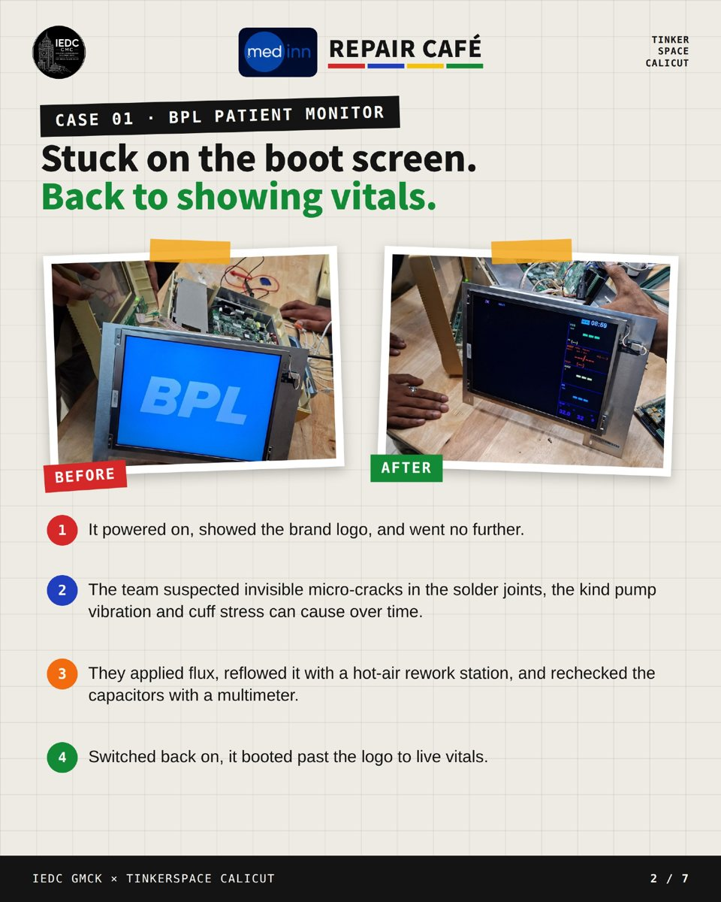
19 Oct 2026
In the press: Malayala Manorama
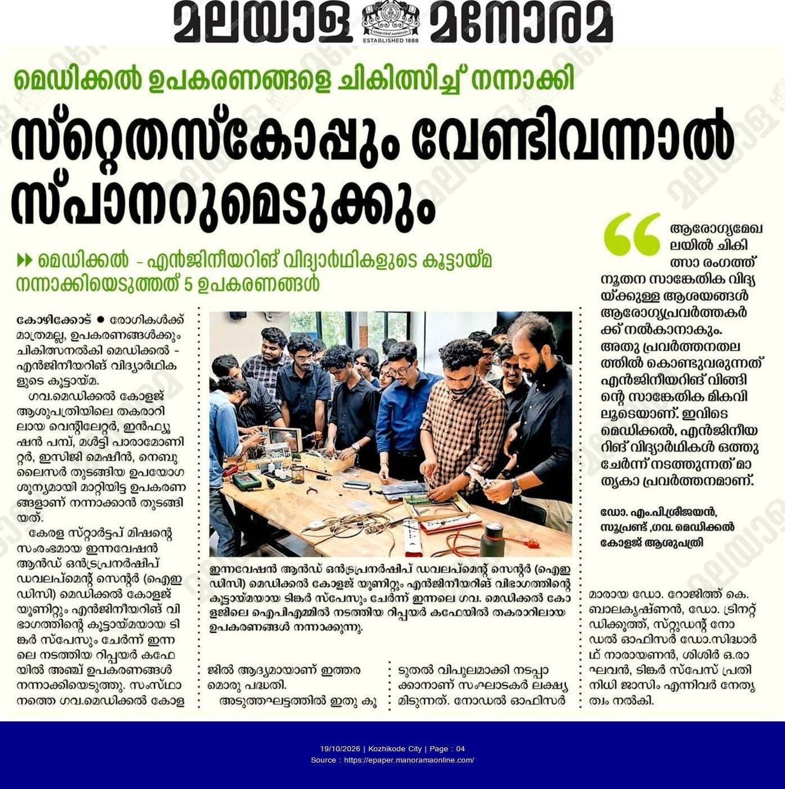
Kozhikode City · page 4
“When needed, the stethoscope and the spanner too.”
“Healthcare workers can offer ideas for new technology in healthcare; engineering's technical strength is what brings them into practice. Medical and engineering students working together here is a model initiative.”Dr. M. P. Sreejayan, Superintendent, Government Medical College Hospital, Kozhikode (translated from Malayalam)
The proposal
An incubator that starts in the ward.
A Kozhikode medical incubator works on healthcare projects in their medical context, from the first problem statement to a pilot in a real ward. Five stages, each one already tested in a smaller form.
01
Problems from the ward
A clinical problem bank fed by doctors, nurses and the biomedical team.
02
Learn from what breaks
Repair cafés and deconstruction labs that turn failed devices into lessons.
03
Build mixed teams
Clinicians with engineers from NIT Calicut, makers from TinkerHub and TinkerSpace.
04
Validate and pilot
Clinical mentors, ethics and pilots in real wards before anything scales.
05
Launch from Malabar
Links to Kerala Startup Mission, iHub and investors for devices that are cheaper, local and built to last.
A first year, around an anchor hospital.
A proposed sequence, to be shaped with partners. Each phase is small, visible and useful on its own.
Months 1–3 · Listen
A problem bank and a hospital Repair Café
- Collect clinical and operational problem statements from hospital departments.
- Run a Repair Café with the hospital biomedical team on condemned or idle devices.
- Pilot the low-cost device maintenance tracker on a set of hospital devices.
Outcome: a documented problem bank and a picture of device health.
Months 4–6 · Build
Build sprints on real problems
- A hackathon on the top problem statements, with NIT Calicut engineers and TinkerSpace makers.
- Hospital clinicians as mentors and judges.
- Shortlist the most promising teams for incubation.
Outcome: working prototypes against real clinical needs.
Months 7–12 · Pilot
Pilots in real wards
- Validate one or two solutions with clinical input and ethics in place.
- Connect teams to Kerala Startup Mission and iHub support.
- Share results publicly as a Malabar innovation story.
Outcome: tested solutions and the first incubated teams.
This is a proposal for discussion, not an agreed plan. Scope, timelines and roles are shaped with each partner.
Who it is for
An incubator works when every side of healthcare is at the table.
The same people who made the Repair Café work, organized into a standing incubator, with a hospital at its centre.
Who brings what
- HospitalsClinical problems, mentors, a biomedical team and a place to pilot. One hospital as the anchor partner.
- Medical colleges and IEDCsStudents and residents who see problems first, and an innovation cell to organize them.
- Engineers and makersNIT Calicut, TinkerHub, TinkerSpace and iHub biomedical engineers who can build.
- Funders, CSR and startup bodiesKerala Startup Mission, investors and CSR programmes to carry good ideas forward.
What partners gain
- Solutions to their own problemsLow-cost tools and devices shaped around real clinical needs.
- Visibility into device healthRepair cafés and a maintenance tracker that surface idle and failing equipment.
- Leadership in MalabarA visible role in building the region's biomedical ecosystem.
- A talent pipelineEarly access to clinicians and engineers who can build.
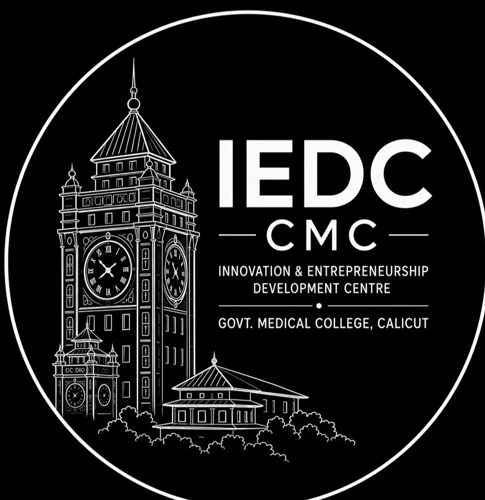
IEDC GMC Kozhikode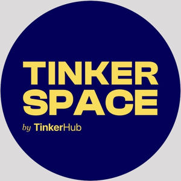
TinkerSpace Calicut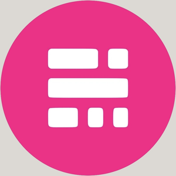
TinkerHub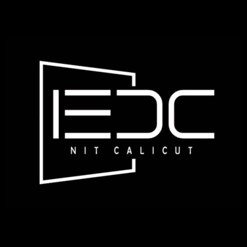
NIT Calicut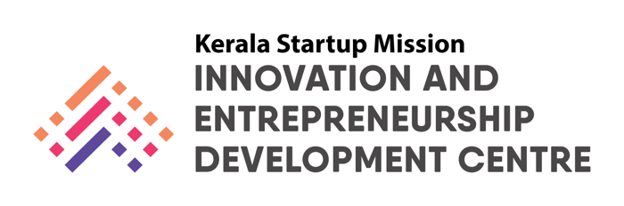
Kerala Startup MissionOrganizations Medinn has already worked with or alongside.
How to be part of it
Three ways in.
Host a Repair Café
One day with your biomedical team on idle or condemned devices. The quickest way to start with something concrete.
Share a problem
Send a clinical or operational problem your team faces. It goes into the problem bank for the next build sprint.
Partner or mentor
Join as an anchor hospital, an institute, a mentor or a funder, and help shape the first year.
Let's build Malabar's medical incubator together.
Dr. Sidharth Narayanan, Medinn
medinnnetworking@gmail.com · LinkedIn